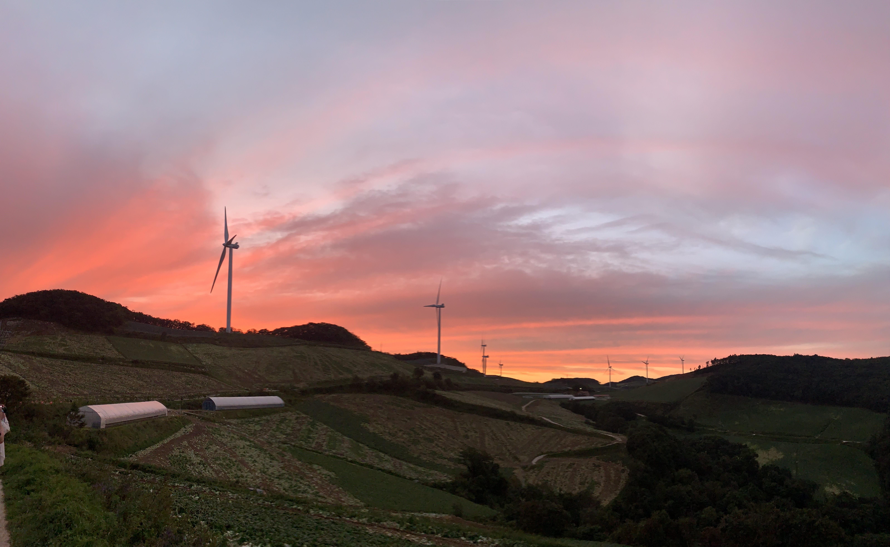

FAVORITES
#뉴캐슬 유나이티드
저는 프리미어리그 축구팀 '뉴캐슬 유나이티드'의 오랜 팬입니다.제 닉네임인 seinthemag의 'the mag'은 뉴캐슬 유나이티드의 애칭 'Magpie(까치)'에서 따왔습니다.
까치는 적응력이 강하고 지능이 좋으며 새로운 것을 가져다 주는 길조로 알려져 있죠.
저에게 새로운 분야인 웹개발을 대함에 있어 까치처럼 강한 적응력을 가지고 도전해보려고 합니다.
#음악
대학교에서 실용음악을 전공했습니다.다양한 음악활동을 경험하면서 오랫동안 음악은 매우 가까운 곳에서 함께였습니다.
뮤지션의 길을 걷지 않는 지금도 여전히 새로운 음악을 찾아 듣는 것을 좋아합니다.
 |
 |
#여행
즉흥적인 여행보다는 소소하더라도 계획적인 여행을 좋아합니다.여행에서 풍경을 담아오는 것을 즐깁니다.